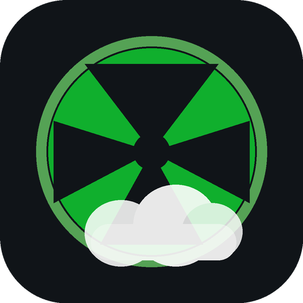

Better xCloud Get ClientThe ultimate client for Xbox Cloud Gaming (xCloud). Unlock crystal-clear 1440p/1080p high-bitrate video, full controller rumble & haptic feedback, custom touch controls, and ultra-low latency.
Pre-compiled releases with 1440p bitrate unlocks, dual haptics, and zero-latency WebRTC enhancements.
Full standalone Android application with built-in WebRTC acceleration, immersive fullscreen, and hardware controller support.
Download APKNative iOS app package optimized for iPhone and iPad with haptic engine bridge, high FPS stream rendering, and gesture navigation.
Download IPAPure browser extension script for Edge, Chrome, Firefox, Safari, and Kiwi Browser via Tampermonkey or Violentmonkey.
Install UserscriptDedicated low-latency desktop environment configured with hardware zero-copy rasterization and direct gamepad rumble.
View InstructionsThis public portal distributes ready-to-run release binaries, compiled application bundles, and userscript packages for players worldwide. All reverse-engineered pipelines, build automation suites, and proprietary source repositories are kept strictly private to protect code security and integrity.
Step-by-step setup guides for each platform.
Choose whichever sideloading method fits your setup:
BetterXCloud_iOS.ipa from the Downloads section above to your computer or iPhone.
BetterXCloud_iOS.ipa into Sideloadly, enter your Apple ID, and click Start.
BetterXCloud_iOS.ipa.
BetterXCloud_iOS.ipa directly in TrollStore for permanent, hassle-free installation.
BetterXCloud_v0.24.2_Fixed.apk.
better-xcloud-optimized.user.js). Tampermonkey will prompt you to confirm the installation—click Install.
Launch_Better_xCloud.bat or execute npm start.
Every feature built to deliver the highest quality cloud gaming experience.
Bypass Microsoft's default bitrate caps. Enjoy pristine video clarity with up to 1440p resolution streaming and reduced macroblocking.
Dual-motor gamepad vibration supported across platforms with adjustable intensity for authentic console rumble feedback.
Play games without a physical controller using our customizable touch layout editor with opacity and button scaling.
Fine-tuned WebRTC buffer configurations minimize input lag and smooth out network jitter during intense gameplay sessions.
Monitor real-time FPS, bitrate, round-trip ping time, frame drops, and audio decoding metrics in an unobtrusive overlay.
Flexible display scaling including 16:9, 16:10, and 21:9 ultrawide stretching to eliminate black borders on modern devices.
Everything you need to know about Better xCloud resources.